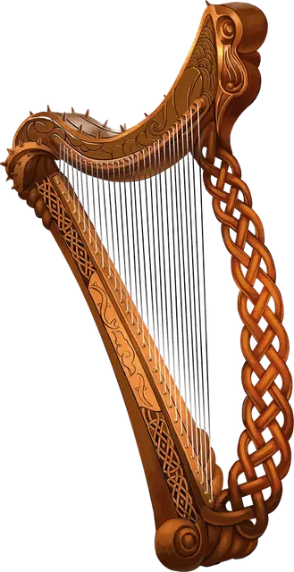

Инструмент бардов
Instrument of the Bards
Чудесный предмет, редкость варьируется (необычный, редкий, очень редкий, легендарный, требуется настройка бардом)

Инструмент бардов это прекрасный образец музыкального инструмента, во всём превосходящий обычные аналоги. Есть семь разновидностей таких инструментов, каждый назван в честь одной из легендарных коллегий бардов. В приведённом списке указаны заклинания, общие для всех инструментов, а также заклинания, специфичные для каждого инструмента, а также редкость этих инструментов. Существо, пытающееся играть на инструменте, не будучи настроенным на него, должно преуспеть в спасброске Мудрости Сл 15, иначе получит урон психической энергией 2к4.
Вы можете действием сыграть на инструменте и наложить одно из его заклинаний. После того как инструмент использован для наложения заклинания, он не может повторно накладывать это заклинание до следующего рассвета. Заклинания используют вашу базовую характеристику и Сл спасбросков от ваших заклинаний.
Вы можете играть на инструменте при наложении заклинания, которое делает цели очарованными при провале спасброска, тем самым давая целям помеху на этот спасбросок. Этот эффект применяется только если заклинание имеет соматический или материальный компонент.